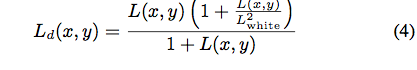
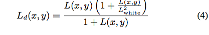
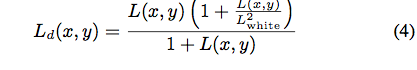

Dynamic range is defined as the range of light intensities present in a scene. In the real world, very large dynamic ranges are common place, sometimes exceeding tens of orders of magnitude. Displaying such images on the computer screen presents a challenge since most output displays have a relatively small displayable dynamic range. This disparity gives rise to the field of tone mapping, which aims at optimizing the mapping from an image with a large dynamic range to a display of small dynamic range.
The paper I was working on uses the tone mapping operator from Photographic Tone Reproduction for Digital Images by Reinhard et al.
1. Initial Luminance Mapping: The world luminance of each pixel is calculated given by :
2. The scene is then mapped to the middle-gray of the displayed image, as given by:
where a is chosen to be a=0.18
3. Then, a tone mapping operator is applied :

4. Automatic Dodging and burning: In traditional dodging and burning, all portions of the print potentially receive a different exposure time, bring "up" selected dark regions or bringing "down" selected regions to avoid loss of detail. To achieve this automatically, the authors suggest convoluting the image with a center-surround function which is constructed using circularly symmetric Gaussian profiles of the form:
These profiles operate at different scales and at different image positions (x,y). The image is then convolved as :
The center-surround function used is defined by:

where center V1 and surrounding V2 responses are derived from the above 2 equations. The equation is calculated to measure the locality of the pixel which amounts to finding a scale s of appropriate size. To consider the largest neighborhood where around a pixel with fairly even luminances, V is thresholded to select a corresponding scale sm where:
where epsilon is the threshold and was chosen to be 0.05
5. Finally, the global tone operator is computed as follows:
This functions constitutes the local dodging and burning. The luminance of a dark pixel in a relatively bright region will get decreased, thereby enhancing the contrast at the pixel. Similarly, a pixel in a relatively dark region will be compressed less.
1.I use radiance .hdr format for the input files
2. The log-average luminance of the scene is calculated as per the equation
3. In my fragment shader this value is passed.
4. Each color value of the floating texture is then converted to luminance using L = 0.27R + 0.67G + 0.06B
5. I tried to use the dodging-and-burning version (still working on it) on the GPU but ran out of time to do so. Instead I used the operator as in equation 4
6. The pixel values are calculated from the luminance values as per the given equation and rendered to a texture.
a controls the saturation and has values between 0.4~0.8
7. The values are converted back to .hdr and displayed

<
My tone mapping operator code seems to work but degrades the colors present in the scene. I tried tweaking the parameters according to the image to get the best possible output. I guess, the degradation is because of the simplicity of the operator used instead of the dodge-and-burn technique. I found the implementation of the algorithm difficult on the GPU. The paper mentions ways to calculate the center-surround functions on the GPU, but I found it difficult to implement it that way on the GPU. Instead, I tried doing it my way but ran out of time. I also tried the same on the CPU using FFT to make computations faster, but that didn't work either. Given more time, I would certainly implement the algorithm in its entirety.
1. Photographic Tone Reproduction for Digital Images - Reinhard et al
2. Interactive Time-Dependent Tone Mapping Using Programmable Graphics Hardware - Goodnight et al